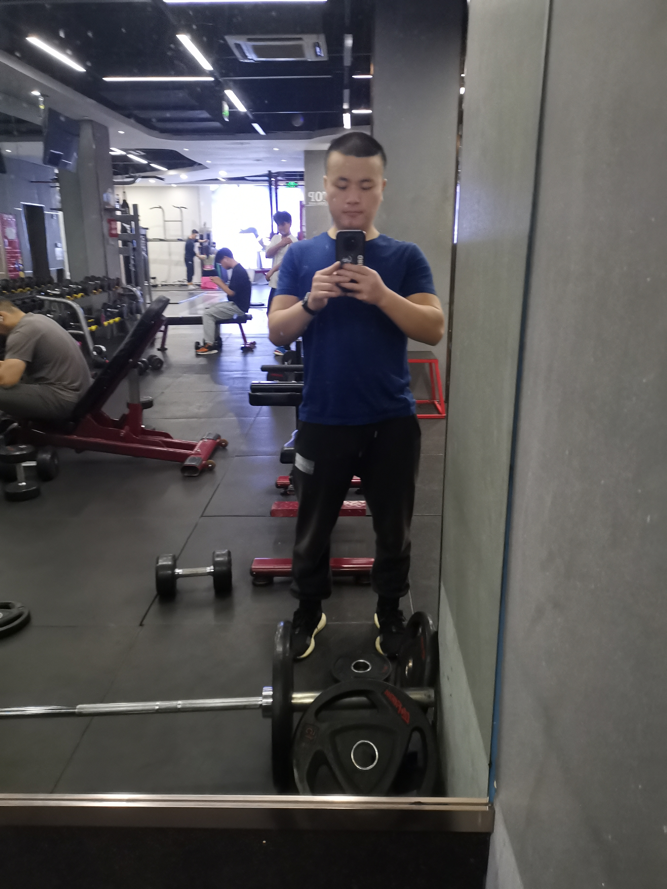
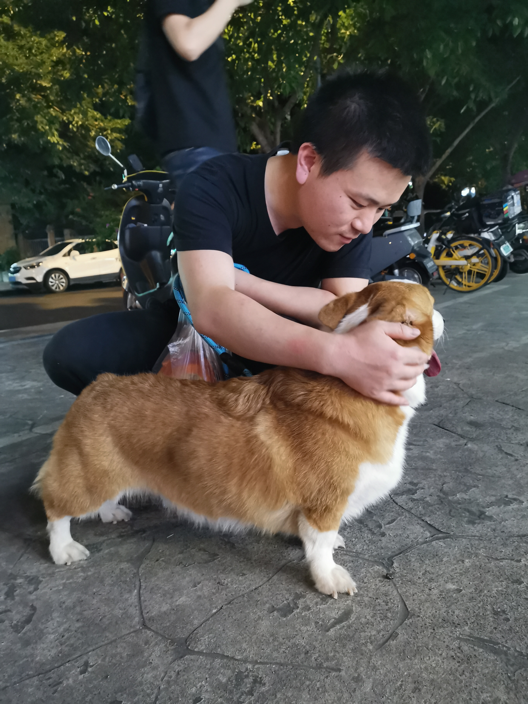
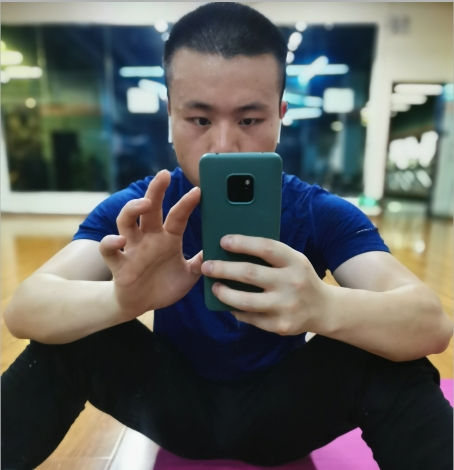

年龄
33 岁
身高
165 cm
职业
医疗器械设计
坐标
成都·龙泉驿
人生足迹
学历奠基
本科 · 成都大学
在这里完成了学业，为未来的职业生涯打下坚实的基础。
职业深耕
大博医疗 · 产品设计负责人
在医疗器械行业多年，专注于隐形正畸设计，连接市场与生产，见证产品的诞生。
生活独立
安家成都 · 有房有车
通过努力在成都安顿下来，拥有自己的小窝和代步工具，享受安稳的生活。
家庭责任
家中长子 · 兄妹独立
作为家中的长子，父母康健有保障，弟弟妹妹均已独立，家庭和睦无负担。
生活百味

挥洒汗水的快乐

家里有只小布丁

暴汗放空

记录生活的瞬间
内心世界
热爱之事
我的生活由一些简单而纯粹的热爱构成：
- 健身，是与身体的对话，更是持之以恒的自律。
- 烹饪，是创造美味的艺术，也是疗愈身心的过程。
- 路亚，是与自然的静谧独处，享受专注与宁静。
- 骑行，是在风中感受自由，用双轮丈量城市。
生活信条
我信奉简单、真实的生活哲学。
消费观：理性务实，追求“拥有”不如追求“感受”，比起物质堆砌，更看重内心的充实与平和。
个人习惯：无烟、无酒、不赌博。生活规律，注重健康，相信良好的身心是一切美好的基础。
关于沟通
性格偏内向，慢热。我享受有来有往、双向奔赴的交流。
也许不擅长单方面地“破冰”或持续输出话题，但我是一个很好的倾听者和回应者。当彼此打开心扉，真诚的交流便会自然而然地发生。
期待的你 & 我们
我所期待的你
希望你是一位活泼开朗、热爱生活的女生。若你也钟爱运动，那便是锦上添花。期待你对生活有热情，对世界有好奇。
我们未来的模样
我向往一种共同成长的伴侣关系。我们可以一起健身，一起研究菜谱，在周末开着车去探索未知的风景，分享旅途中的点滴美好，在平凡的生活中创造属于我们的不凡回忆。
一点坦诚
我的身高是165cm，这是我真实的一部分。如果你对此有所介意，希望我们都能坦诚面对。
思想上偏传统，在关系未明确前，会保持尊重和恰当的距离。我相信，真诚是建立一切信任的基石。